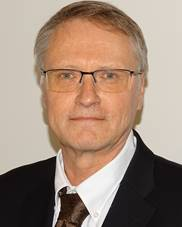

1st Joint International Workshop on Network Programmability & Automation (NetPA 2021)
Monday 25 October 2021
With the same spirit of CNSM as a whole, the workshop on “Network Programmability and Automation” (NetPA) aims at providing an international forum for researchers and practitioners from academia and industry at large, including network operators, service providers, equipment manufacturers and IT companies, to discuss and address the challenges deriving from network programmability and network zero-touch automation for the delivery and operation of networks and services. On the one hand, the workshop will discuss the use of analytics and AI-based models to perform decision making at abstracted levels of the network to bring flexible and adaptive network service provisioning while ensuring smooth service continuity, SLA-compliance and service assurance. On the other hand, the workshop captures the evolutions of networking protocols towards more performance and security. This includes the design of high-level languages and associated tool chains for specifying network and nodes behaviors, automated methods and tools for validating both control and data plane operation; protocols for network programmability like Segment Routing; programmable data plane architectures, hardware platforms, software execution environments; network applications addressing open problems in traffic engineering, measurement, and problem diagnosis.
Amina Boubendir, Orange Labs, France
Stefano Salsano, University of Rome Tor Vergata, Italy
Carlos Guimarães, UC3M, Spain
Josep Mangues-Bafalluy, CTTC, Spain
Xi Li, NEC Laboratories, Germany
Lisandro Zambenedetti Granville, Federal University of Rio Grande do Sul (UFRGS), Brazil
Marco Bonola, CNIT, Italy
Gabor Retvari, Budapest University of Technology and Economics, Hungary
Ahmed Abdelsalam, CISCO, USA
Diego R. López, Telefonica I+D, Spain
NetPA workshop is sponsored by the following 4 European projects:
The NetPA workshop will be held on Monday October 25th. The program can be found here.
| 08:30 | Opening and Welcome message |
| 08:45 - 10:15 | TS1 - Zero-touch Network and Service Management |
|
HolistIX: a zero-touch approach for IXPs Christoff Visser (IIJ Innovation Institute, Japan); Marc Bruyere (IIJ Innovation Institute & The University of Tokyo, Japan); Yuji Sekiya and Seiichi Yamamoto (The University of Tokyo, Japan); Takashi Tomine (National Institute of Information and Communications Technology, Japan) |
|
|
Delay-Sensitive Wireless Content Delivery: An Interpretable Artificial Intelligence Approach Estefania Coronado (Fundació i2CAT, Internet i Innovació Digital a Catalunya, Spain); Blas Gómez (University of Castilla-La Mancha, Spain); José Villalón (UCLM, Spain); Antonio Garrido (University of Castilla-La Mancha, Spain); Muhammad Shuaib Siddiqui (Fundació i2CAT, Internet i Innovació Digital a Catalunya, Spain); Roberto Riggio (Università Politecnica Delle Marche, Italy) |
|
|
Network Assurance in Intent-Based Networking Data Centers with Machine Learning Techniques Xiaoang Zheng (Ecole de Technologie Superieure, Canada); Aris Leivadeas (École de Technologie Supérieure, Canada) |
|
| 10:15 - 10:30 | Coffee Break |
| 10:30 - 11:14 | Keynote Session |
| Klaus Martiny, Senior Consultant, ORBIT at Deutsche Telekom AG - Chair of the ETSI ISG ZSM | |
| 08:45 - 10:15 | TS2 -Network Programmability with P4 |
|
Charon: Load-Aware Load-Balancing in P4 Carmine Rizzi (Ecole Polytechnique, France); Zhiyuan Yao (Ecole Polytechnique & Cisco Systems France, France); Yoann Desmouceaux (Cisco Systems, France); Mark Townsley (Cisco, France); Thomas Heide Clausen (Ecole Polytechnique, France) |
|
|
P4 language extensions for stateful packet processing Angelo Tulumello (University of Rome Tor Vergata & CNIT, Italy) |
|
|
Dynamic Service Programming with Path Preprocessing Julian Klaiber, Severin Dellsperger and Laurent Metzger (Eastern Switzerland University of Applied Sciences, Switzerland); Ahmed Abdelsalam (Cisco Systems, Italy); Francois Clad (Cisco System, France) |
|
| 12:45 - 13:45 | Lunch |
| 13:45 - 15:15 | TS3 - Beyond Network Programmability |
|
An In-Kernel Solution Based on XDP for 5G UPF: Design, Prototype and Performance Evaluation Thiago Arruda Navarro do Amaral (University of Campinas, Brazil); Raphael Vicente Rosa (Unicamp & Faculty of Electrical and Computer Engineering, Brazil); David Moura (CTEx & INTRIG - Information & Networking Technologies Research & Innovation Group, Brazil); Christian Esteve Rothenberg (University of Campinas - UNICAMP, Brazil) |
|
| Token Cell Routing: A New Sub-IP Layer Protocol Stewart Bryant ( & University of Surrey, United Kingdom (Great Britain)); Alexander Clemm (Futurewei Technologies, USA) | |
|
Programmable Data Planes as the Next Frontier for Networked Robotics Security: A ROS Use Case Diego Rossi Mafioletti (Federal University of Espírito Santo, Brazil); Ricardo Mello (Universidade Federal do Espírito Santo, Brazil); Marco Ruffini (CONNECT, Trinity College Dublin, Ireland); Valerio Frascolla (Intel Deutschland Gmbh, Germany); Magnos Martinello (Federal University of Espirito Santo, Brazil); Moises R. N. Ribeiro (Federal Universty of Espirito Santo, Brazil) |
|
| 15:15 - 15:30 | Coffee Break |
| 15:30 - 17:15 | Expert Panel Moderator: Amina Boubendir, Orange Labs, France |
| On the challenges of network programmability and automation under resilience and sustainability stakes | |
| Invited Speakers: | |
|
|
| 17:15 - 17:30 | Workshop closing |
Klaus Martiny, Senior Consultant, ORBIT at Deutsche Telekom AG.
Chair of the ETSI ISG ZSM since 2018; Zero Touch Service and Network Management. Vice Chair of the NOC in ETSI ISG NFV since 2014. Project Lead of the NWMO (MANO Requirements for 5G) project in NGMN. Focus on the definition of MANO requirements in the 5G Project. Project Leads of the NGCOR I and II in NGMN (Definition of Operations Requirements for Converged networks). Coordinator of the new Industry Initiative Network and Service Management (NSM). ORBIT at Deutsche Telekom Senior Consultant since June 2021. Senior Program Manager at Deutsche Telekom 2010 – 2021. VP Vice President Continuous Improvement for Operations of T-Mobile International 2001 – 2010. Head of Operations (SVP) in E-PLUS 1992 – 2001. GSM Radio Validation and Specification in DETECON. Publication: articles concerning outsourcing, international project management (Merger and Optimization of international Organization); organizational change management; Disaster and Business Continuity; Network Management of future Networks.

Hannu Flinck received his M.Sc. and Lic.Tech.
Degrees in computer science and communication systems from Aalto University in 1986 and 1993, respectively. He was with the Nokia Research Center and the Technology and Innovation Unit of Nokia Networks in various positions. He is a research manager with Nokia Bell Labs, Espoo, Finland. He has actively participated in a number of EU research projects. His current research interests include mobile edge computing, SDN, and content delivery in mobile networks, particularly in 5G networks.
Carla Fabiana Chiasserini is Full Professor with Politecnico di Torino, Italy, and a Research Associate with the Italian National Research Council (CNR). She was a Visiting Researcher at UC San Diego from 1998 to 2003, and a Visiting Professor at Monash University, Australia, in 2012 and 2016. She is a Fellow of the IEEE, as well as an AAIA Fellow. Her research interests include 5G-and-beyond Networks, NFV, Mobile Edge Computing, Connected Vehicles, and Distributed Machine Learning at the network Edge. She has published over 320 journal articles and referred conference papers, and has received several awards for her scientific work. Currently, she serves as Editor-in-Chief of the Computer Communications journal and as an Associate Editor of the IEEE/ACM Transactions on Networking. Carla is also a member of the Steering Committee of the IEEE Transactions on Network Science and Engineering and of the ACM MobiHoc conference. She has served for several years on the Editorial Board of journals such as the IEEE Transactions on Wireless Networks and the IEEE Transactions on Mobile Computing, and she has been Co-Guest Editor of a number of journals special issues. Carla is/has been involved in may national and International research projects, either as a coordinator or a PI, including the EU H2020 5G-Crosshaul, 5G-TRANSFORMER, I-REACT, 5GROWTH, RAINBOW, and Hexa-X projects. For more information, please refer to: http://www.telematica.polito.it/public/faculty/carla-fabiana-chiasserini/.
Hatim Chergui received the bachelor’s degree in telecommunications engineering from the Institut National des Postes et Télécommunications (INPT), Rabat, Morocco, in 2007, and the Ph.D. degree (summa cum laude) in electrical engineering and telecommunications from IMT Atlantique (Télécom Bretagne), Brest, France, in 2015. Since 2008, he has been a Radio Network Planning and Optimization Engineer with extensive industry experience in providing 3G/4G consulting at Huawei Technologies, Morocco. He has worked as a Radio Technologies Expert at Moroccan Operator INWI, Casablanca, Morocco. He is currently the Project Manager of the H2020 MonB5G European Project and a Researcher at the Catalan Telecommunications Technology Center (CTTC), Barcelona, Spain. He was a recipient of the IEEE ICC 2020 Best Paper Award. He is an Associate Editor at IEEE NETWORKING LETTERS. His research interests lie in the area of performance analysis and artificial intelligence for wireless communications.
Dr. Luis M. Contreras is Telecom Engineer (M.Sc.) by the Universidad Politécnica of Madrid, and holds a M.Sc. and a Ph.D. on Telematics from the Universidad Carlos III of Madrid. Since August 2011 he has been part of Telefónica I+D / Telefónica CTO unit, working on 5G, SDN, virtualization, transport networks and their interaction with cloud and distributed services, as well as on interconnection topics. Before the position in Telefónica he worked in Alcatel and Orange. He is actively involved in research and innovation activities, with 80+ papers published in relevant journals, magazines and conferences. He has participated in projects funded by the EU and the ESA. Currently he is working on the projects EU H2020 5GROWTH, EU-TW 5G-DIVE, and EU GNSS ROOT. In the standardization arena, he is an active contributor to IETF, ETSI, ITU-T and ORAN.